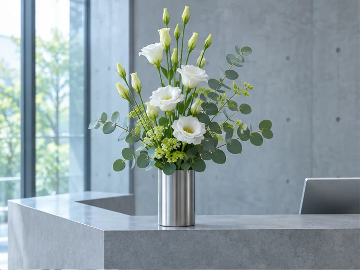
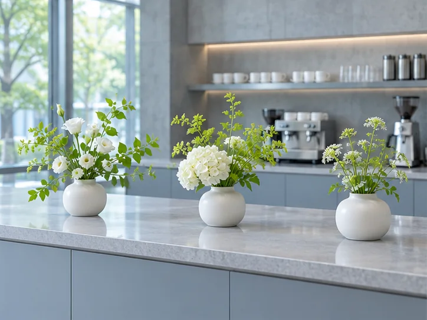

Lễ tân
Một bình đứng cao 40–55 cm cho quầy đón khách. Chọn cành thẳng, ít rụng và quay mặt hoa về hướng khách bước vào.
Thay hoa mỗi tuần, bao gồm mượn bình. Phù hợp quầy rộng từ 80 cm.
Tính chi phí gói lễ tânGiá minh họa cho một chu kỳ bốn tuần tại một địa điểm. Vật dụng cho mượn được thu lại khi kết thúc chu kỳ.
| Gói | Lượt thay / chu kỳ | Giá minh họa |
|---|---|---|
| Lễ tân | 4 | 2.200.000 ₫ |
| Phòng họp | 8 | 3.600.000 ₫ |
| Quầy dài | 8 | 4.900.000 ₫ |

Một bình đứng cao 40–55 cm cho quầy đón khách. Chọn cành thẳng, ít rụng và quay mặt hoa về hướng khách bước vào.
Thay hoa mỗi tuần, bao gồm mượn bình. Phù hợp quầy rộng từ 80 cm.
Tính chi phí gói lễ tân
Hai bình thấp cho bàn dài, giữ tầm nhìn khi họp và chỗ đặt laptop. Ưu tiên cành nhẹ mùi, bề ngang nhỏ.
Thay hai lần một tuần. Chiều cao tối đa 22 cm tính từ mặt bàn.
Tính chi phí gói phòng họp
Ba bình nhỏ chạy dọc mặt quầy, bố trí giữa các điểm lấy đồ. Từng bình có thể di chuyển khi cần giải phóng mặt bàn.
Thay hai lần một tuần. Mỗi bình chiếm diện tích khoảng 16 × 16 cm.
Tính chi phí gói quầy dài